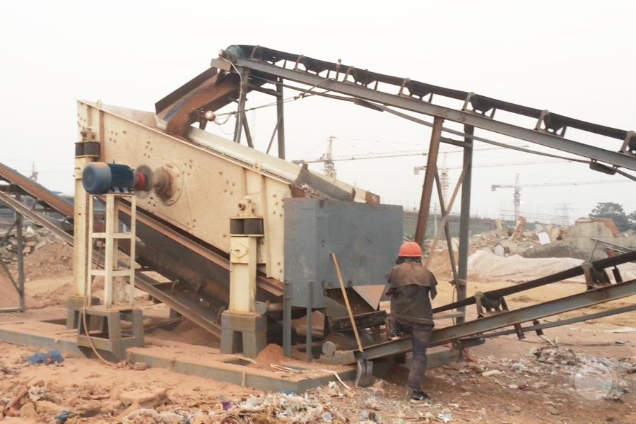

Construction waste crushing production line

Mobile construction waste crushing station for urban construction waste crushing.
Construction Waste Recycling Plant
Construction waste crushing equipment selection GZG series of vibrating feeder reasons
Construction waste massive, complex components, a larger particle size differences. In the construction waste as recycled materials production lines, requiring continuous feeder evenly fill the material into the crusher, and to avoid crushing machine by plugging spout. Require physical characteristics as well as comprehensive construction waste equipment, suggested the use of GZG series vibration feeder, for the following reasons:

(1). GZG series of vibrating feeder structure is simple, reliable, it can ensure that the material continuously and evenly into the next level device;
(2). found that the presence of a large block construction waste materials in the preliminary investigation, some even up to about 1m. GZG series of vibrating feeder feed particle size is small, but GZT Series Vibrating Feeder feeding large size, suitable for handling large differences in particle size material.
(3) . Finely divided material content and other large construction waste soil. GZT Series Vibrating Feeder The unique design allows the screen bars smaller waste material through the screen bars gap whereabouts. After crushing process prior to play pre-screening function, thereby enhancing the crushing capacity of the crusher and the cleanliness of the pellets, to provide protection for the recycling of construction waste.
(4). ZSW series vibrating feeder wear parts more, and basically does not exist GZT series of wear parts on the system is also more economical preparation is essential crushing and screening equipment. Therefore suggested the use of GZT Series Vibrating Feeder.
Leave Me A Message, Now
If you have any questions regarding equipment prices, production line configuration or other problems, you can send a message to us, we will contact you soon.